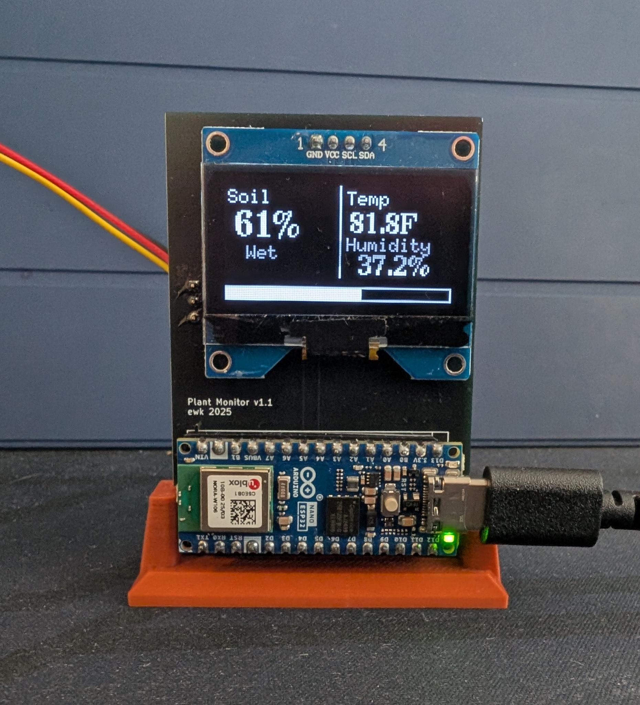
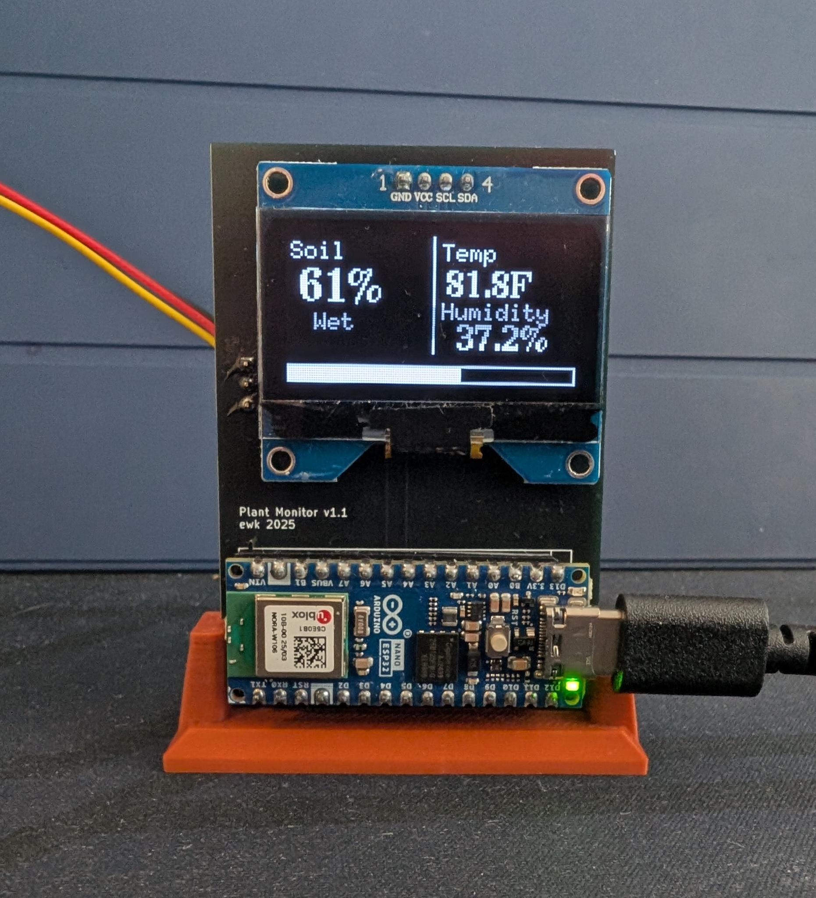

Evan Kuvshinoff

Career Objective
To engineer intelligent, embedded systems that enhance user experience, performance, and accessibility; drawing on a strong interest in low-level programming, edge computing, and responsive UX to solve real-world challenges.

University of Maryland, College Park
B.S. in Computer Engineering with Cybersecurity Specialization
May 2025
Google Career Certificate
Cybersecurity Professional
2024
Technical Skills
Programming Languages
- C/C++/C#
- Python
- Go
- Java
- SQL
- HTML/CSS
- Verilog
- x86 Assembly
Software & Tools
- Linux/Unix Systems
- Git/SVN
- Azure
- Agile/Scrum/Waterfall
- Jira
- STM32CUBE IDE
- Unity Game Engine
- MATLAB/Simulink
Hardware & Embedded
- STM32 Microcontrollers
- ESP32
- Arduino UNO
- Raspberry Pi (5/Zero/Pico)
- FPGA Development
- Circuit Design & Analysis
- PCB Design
- Digital Signal Processing
Specialized Areas
- AI/ML Integration
- Cloud Computing
- IoT System Design
- Network Programming
- Edge Computing
- Computer Vision
- Real-time Systems
- Cybersecurity
Clarity: AI Assistant Platform with Voice and Vision
- Fully functional robot assistant with real-time speech interaction
- Edge-based facial recognition with dynamic servo control
- Natural language understanding via OpenAI API
Clarity Robot - GitHub Repo
Clarity is a sophisticated robot that combines artificial intelligence, computer vision, and servo-controlled movement to create an interactive companion with personality. Built on a distributed architecture using Raspberry Pi and custom hardware, Clarity can engage in natural conversations through voice commands while displaying emotions on an integrated OLED screen. The robot features real-time face detection and tracking using both cloud and edge computing, allowing it to follow and interact with users naturally. The system demonstrates advanced engineering through its multi-process architecture, where separate components handle voice processing, visual recognition, and motor control, all communicating through custom socket protocols. Clarity integrates OpenAI's GPT-4 for conversational AI, Vosk for speech recognition, and OpenCV for computer vision, creating a seamless human-robot interaction experience. The project showcases expertise in distributed systems, real-time audio and video processing, hardware integration, and AI implementation, representing a complete robotics solution from low-level servo control to high-level artificial intelligence.
Friend Signals IoT Communication System
- Custom IoT devices using Raspberry Pi Pico W
- Cloud-hosted Azure server communication
- Discord bot integration for remote control
IoT Communication Network - GitHub Repo
Friend Signals is an innovative IoT system that allows users to remotely trigger alarm devices owned by friends through Discord commands. The system consists of MicroPython-based IoT devices featuring synchronized LED patterns and buzzer alarms, managed by a centralized Python server that handles device registration, connection health monitoring, and command routing. Each device connects to WiFi and maintains persistent TCP connections with the server, implementing custom handshake protocols and heartbeat mechanisms for robust network communication. The server utilizes asynchronous programming with asyncio to handle multiple concurrent clients while providing seamless integration with Discord's API for user commands. The embedded devices demonstrate sophisticated concurrent programming on resource-constrained microcontrollers, managing real-time hardware control, network communication, and system reliability through watchdog timers. This project highlights expertise in distributed systems architecture, embedded programming, network protocols, and creative integration between modern social platforms and physical hardware, creating an entirely new category of social IoT interaction.
Smart Plant Monitor
- Smart plant pot with soil moisture monitoring
- OLED display for real-time readings
- Bluetooth connectivity for remote monitoring
Smart Plant Monitoring System
The Smart Plant Monitor represents a complete IoT product development cycle, from custom PCB design to production-ready firmware implementation. Built around an Arduino Nano ESP32, the device provides real-time soil moisture monitoring through calibrated analog sensors, displaying rich visual feedback on an integrated OLED screen with custom graphics including progress bars and animated water drop indicators. The system implements Bluetooth connectivity for wireless data transmission, enabling remote monitoring capabilities. The project showcases professional hardware development practices through custom PCB design using KiCad, proper component selection, and signal conditioning for accurate sensor readings. The firmware demonstrates embedded systems expertise with real-time sensor processing, mathematical calibration algorithms, and efficient graphics rendering using the U8g2 library. This project exemplifies the complete IoT development process, combining electrical engineering, embedded programming, wireless protocols, and user experience design to create a market-ready smart home device that bridges the gap between hobbyist projects and commercial IoT products.
Subsequent versions of the Plant Monitor include a HTS221 temperature/humidity sensor and provide the same functionality as the Telemetry Station over Bluetooth on top of the existing Plant Monitor features. A third generation, meant to be a commercial product, is in development. It will have a custom enclosure and a redesigned PCB, retaining feature parity with the first generation while dramatically reducing cost and maximizing ease of use.
 

Clarity Telemetry Station
- Wireless temperature and humidity monitoring
- Real-time environmental data collection
- Bluetooth integration with Clarity system
Environmental Monitoring Station
I developed a multi-sensor telemetry system using the Zephyr Real-Time Operating System that aggregates environmental data from multiple sensors and provides wireless access to the Clarity robot through Bluetooth Low Energy. This embedded system demonstrates advanced RTOS programming, sensor integration, and wireless communication protocols in a production-ready IoT device architecture.
The system integrates a VL53L0X time-of-flight laser distance sensor for precise ranging measurements, and an HTS221 environmental sensor providing both temperature and humidity readings. The firmware implements robust sensor initialization with device tree integration, ensuring proper hardware abstraction and driver compatibility within the Zephyr ecosystem. Each sensor is polled independently with error handling.
Clarity's system prompt includes a tool call to connect to the station and poll the data, allowing the robot to determine the ambient temperature or humidity when asked. This project showcases expertise in RTOS development, embedded systems architecture, sensor interfacing protocols, Bluetooth Low Energy specification implementation, and real-time data processing.
Explainable AI
- Modular XAI framework for cognitive-motor research
- Agile development in 6-person research team
- Configurable interface for experimental parameterization

XAI Research Project - More Information
I contributed to a capstone research project at the University of Maryland's Neuromotor Control and Learning Lab, developing explainable AI integration tools for human-robot teaming studies. This software forms a critical component of experimental infrastructure being used in forthcoming NMCL research intended for peer-reviewed publication. The project focused on creating flexible, research-grade tools that enable cognitive-motor studies exploring how humans interact with and understand AI decision-making in collaborative robotic environments.
Working in a 6-person team using Agile methodologies, I designed and implemented a modular explanation generation framework that allows researchers to configure XAI parameters for use in experimental research. The system features a configurable interface supporting variable timing and delivery modes for explanations, enabling precise control over when and how AI reasoning is communicated to human subjects. I also refactored the experiment loading logic, significantly expanding the platform's capacity to accommodate new experimental designs in cognitive-motor studies. The architecture emphasizes modularity and extensibility, allowing the lab to easily expand the scope of their research.
This project demonstrates expertise in research software development, human-computer interaction design, and collaborative development practices. The modular framework design showcases my ability to create flexible, user-friendly tools for non-technical researchers while maintaining robust software architecture. The work highlights proficiency in Agile development methodologies, experimental software design, and contributing to academic research infrastructure that will impact the broader scientific community's understanding of human-AI collaboration.